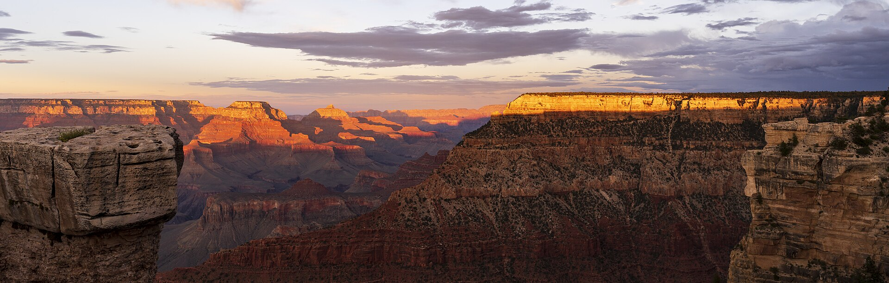
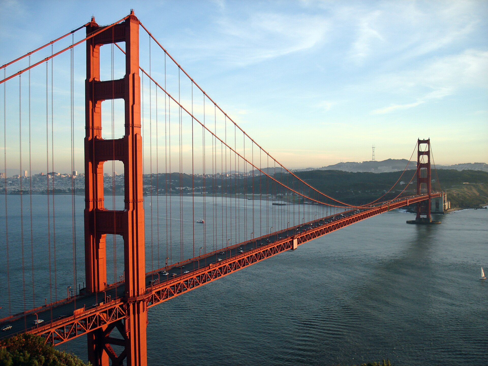
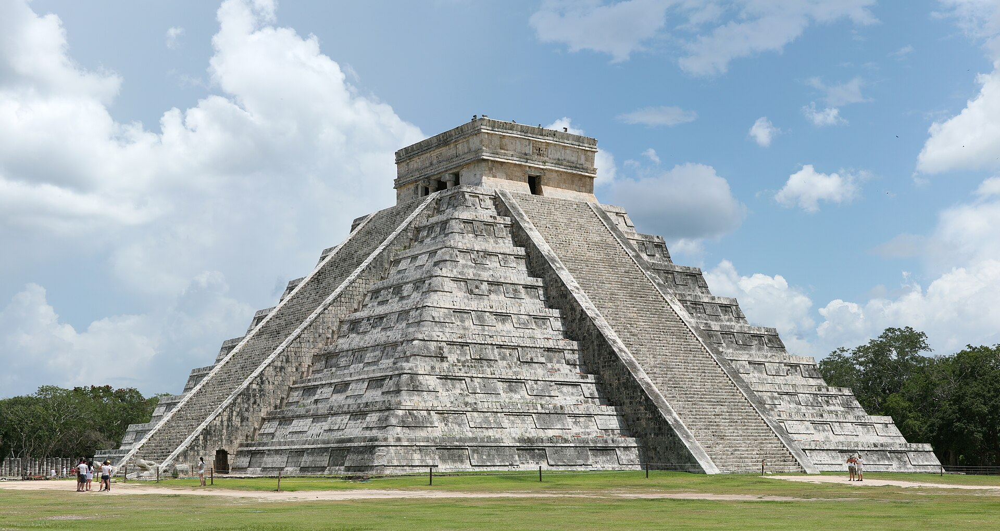
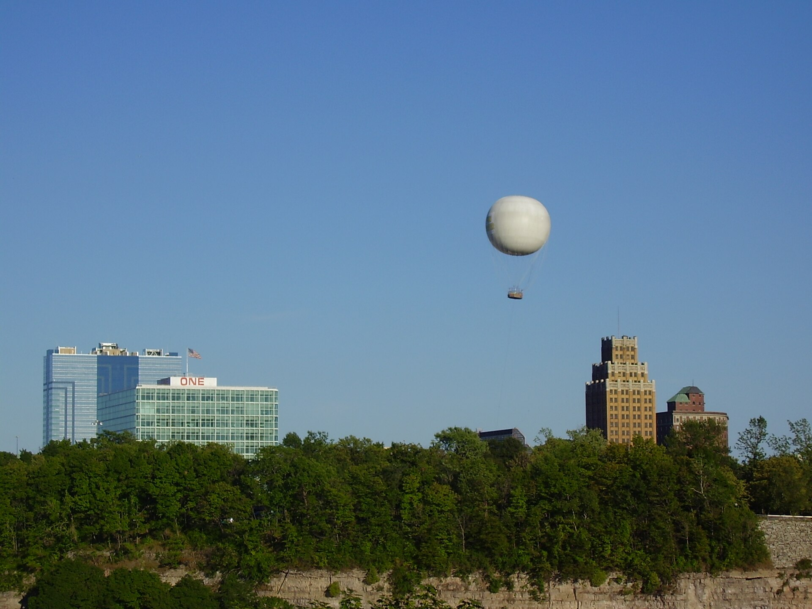
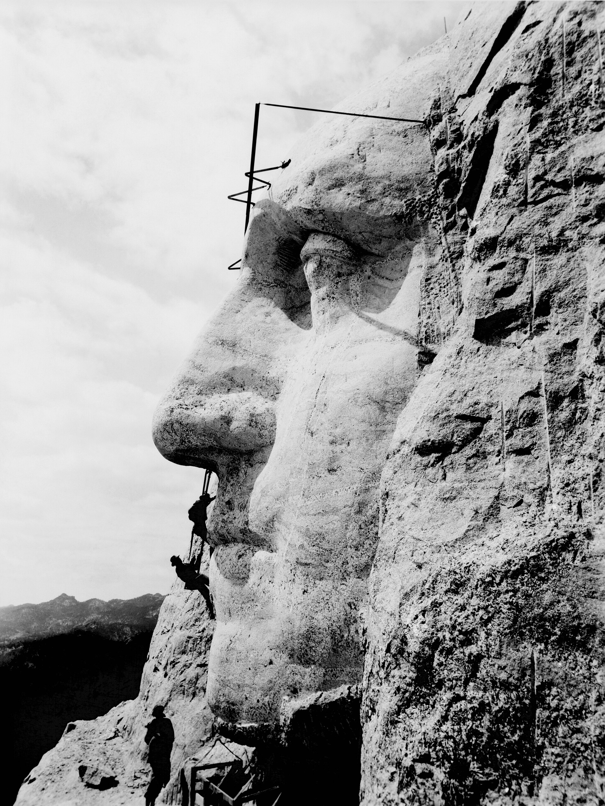
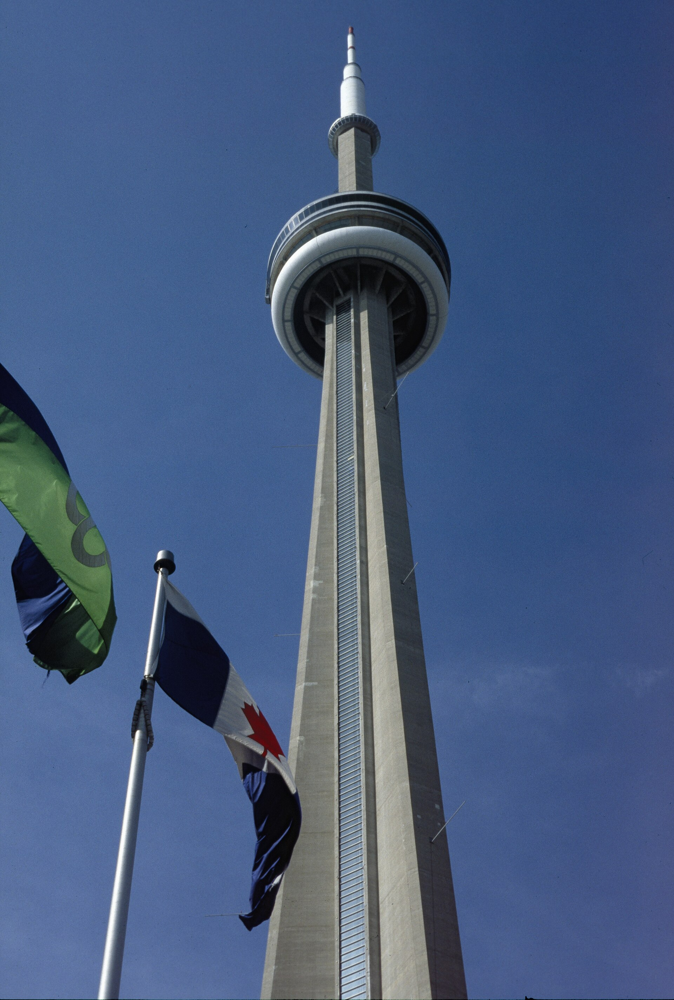

Überblick
Wahrzeichen sind Orte, Bauwerke oder Landschaftsformen, die in der öffentlichen Vorstellung für einen Raum stehen: Sie verdichten Geografie, Geschichte und kollektive Bilder. In Nordamerika reicht diese Palette von Naturwundern und indigenen Zeremoniallandschaften bis zu technischen Ikonen der Moderne. Der Kontinent – in der physischen Geografie vom Arktischen Ozean bis zur Landenge von Panama, einschließlich Mittelamerikas und der Karibik – bietet Extreme: tief eingeschnittene Canyons, Grenzfalllandschaften, präkolumbische Städte und Skyline-Symbole.
Wahrzeichen sind keine neutrale Liste „schönster Orte“. Sie entstehen durch Nutzung, Macht und Erzählung: Kolonialstaaten, Nationalparks, UNESCO-Listen, Tourismus und indigene Kontinuität formen, was als ikonisch gilt. Die Freiheitsstatue und der CN Tower prägen Stadtsilhouetten; Grand Canyon und Niagara-Fälle verkörpern Erosion und Wasserenergie; Chichén Itzá erinnert an Maya- und Toltek-Komplexe auf der Yucatán-Halbinsel; Mount Rushmore ist zugleich nationales Memorial und umstrittenes Eingreifen in die Black Hills. Die Golden Gate Bridge zeigt, wie Infrastruktur zum Landschaftssymbol werden kann. Andere Orte – Denali, die Everglades, Teotihuacán oder Habana Vieja – wären ebenso berechtigt; die Auswahl hier folgt verbreiteter Ikonografie, nicht einer wissenschaftlichen Rangordnung.
Geografisch lassen sich die sieben Beispiele grob gliedern: Naturprozesse (Canyon, Fälle), präkolumbische Urbanität (Chichén Itzá), politische und nationale Symbolbauten (Freiheitsstatue, Mount Rushmore) sowie Ingenieurbauwerke der Verkehrs- und Medienmoderne (Golden Gate, CN Tower). Gemeinsam ist ihnen hohe Sichtbarkeit in Bildmedien und Reisewirtschaft. Unterschiede liegen in Trägerschaft (National Park Service, Provinzen, mexikanische Denkmalpflege), in indigenen Rechts- und Sinnzusammenhängen und in ökologischen Belastungen durch Besuchermassen. Der Artikel führt jeweils Lage, Entstehung und Bedeutung kurz aus und verweist auf belastbare Quellen; erfundene Präzisionszahlen und Mythen ohne Beleg bleiben außen vor. Wer den Kontinent nur über die USA denkt, verfehlt Yucatán und Toronto; wer nur Naturwunder zählt, verfehlt Stätten präkolumbischer Urbanität und moderne Türme.
Die Wahrzeichen
Freiheitsstatue
Die Freiheitsstatue (englisch Statue of Liberty, französisch La Liberté éclairant le monde) steht auf Liberty Island im Upper New York Bay vor New York City. Die kupferne Kolossalfigur einer Frau mit Fackel und Gesetzestafel ist ein Geschenk Frankreichs an die Vereinigten Staaten und wurde am 28. Oktober 1886 eingeweiht. Bildhauer war Frédéric Auguste Bartholdi; das innere Metallgerüst stammt von Gustave Eiffel. Von der Basis bis zur Fackelspitze misst das Monument rund 93 Meter; die Figur selbst ist etwa 46 Meter hoch. Auf der Tafel steht das Datum der Unabhängigkeitserklärung (4. Juli 1776) in römischen Ziffern.
Die Idee geht auf den französischen Intellektuellen Édouard de Laboulaye zurück, der nach dem amerikanischen Bürgerkrieg Freundschaft und republikanische Werte betonen wollte. Finanzierung und Bau zogen sich hin: Die Statue entstand in Frankreich, wurde zerlegt nach New York verschifft und auf einem Sockel (Entwurf Richard Morris Hunt) im ehemaligen Fort Wood montiert. Seither gilt sie als Symbol von Freiheit und Einwanderung; Emma Lazarus’ Sonett „The New Colossus“ (1883) ist mit dem Sockel verbunden und prägte das Bild der „Mutter der Exilanten“. 1924 wurde die Statue National Monument, 1984 UNESCO-Weltkulturerbe. Restaurierungen – darunter die große Sanierung zum hundertjährigen Jubiläum – sichern Kupferhaut und Fackel. Die Statue ist heute Nationalpark-Gebiet und Touristenmagnet; sie steht zugleich für politische Mythen und für die reale Einwanderungsgeschichte über den Hafen, zu der Ellis Island gehört. Als geografisches Wahrzeichen markiert sie den Atlantikeingang zu einer Weltmetropole und die Verschränkung europäischer und nordamerikanischer Erinnerungskultur.
Grand Canyon

Der Grand Canyon im Norden Arizonas ist eine der bekanntesten Erosionslandschaften der Erde. Der Colorado River und seine Nebenflüsse haben in das Colorado-Plateau tief eingeschnittene Schluchten und farbige Schichtstufen gegraben. Die freigelegten Gesteine reichen bis in präkambrische Zeiten: Im inneren Canyon liegen magmatische und metamorphe Gesteine, die nahezu zwei Milliarden Jahre alt sind; darüber folgen paläozoische Sedimentpakete. Der Canyon selbst gilt als geologisch jung: Viele Studien ordnen die Integration des heutigen Colorado-Laufs und die Haupteintiefung den letzten etwa fünf bis sechs Millionen Jahren zu, wobei Abschnitte und Vorläufer-Täler älter sein können und die Forschung weiter diskutiert.
Der Canyon ist nicht der tiefste der Welt, aber durch Breite, Farbschichtung und Zugänglichkeit außergewöhnlich. John Wesley Powell führte 1869 eine berühmte Flussfahrt durch das damals wenig kartierte Gebiet. Federaler Schutz begann Ende des 19. Jahrhunderts; 1919 wurde der Grand Canyon National Park eingerichtet. Heute ist der Park eines der meistbesuchten Schutzgebiete der USA. Für indigene Nationen der Region – darunter Havasupai, Hopi, Navajo/Diné und andere – ist die Landschaft kulturell und spirituell bedeutsam, nicht nur touristische Kulisse. Geografie und Tourismus treffen hier auf Wasserwirtschaft (u. a. Staudämme am Colorado), Naturschutz und die Frage, wie Massentourismus Ränder, Trails und Ökosysteme belastet. Der Canyon lehrt zugleich Tiefenzeit: Wer die Schichtstufen liest, sieht Kontinentgeschichte in Querschnittform.
Golden Gate Bridge

Die Golden Gate Bridge verbindet San Francisco mit dem Marin County über die Meerenge Golden Gate, den Eingang zur San Francisco Bay. Die Hängebrücke wurde 1933 bis 1937 gebaut und am 27./28. Mai 1937 für Fußgänger bzw. Fahrzeuge freigegeben. Chefingenieur war Joseph Strauss; wesentliche Beiträge kamen unter anderem von Charles Ellis, Leon Moisseiff und dem Architekten Irving Morrow (Art-déco-Gestaltung, charakteristisches Orange „International Orange“). Die Hauptspannweite beträgt rund 1.280 Meter; die Gesamtlänge einschließlich Zufahrten liegt bei etwa 2,7 Kilometern. Lange war die Spannweite Weltrekord, bis größere Brücken sie ablösten.
Der Bau galt als waghalsig: starke Gezeiten, Nebel, Wind und große Wassertiefen erschwerten Gründung und Montage. Sicherheitsnetze und Vorschriften reduzierten Unfälle, konnten sie aber nicht völlig verhindern. Die Brücke wurde unter Budget und vor dem Zeitplan fertig und avancierte rasch zum Wahrzeichen der Pazifikküste – fotografiert bei Nebelschwaden, Sonnenuntergängen und aus dem Presidio. Seismische Nachrüstung und regelmäßige Wartung sichern die Konstruktion in einem erdbebengefährdeten Raum. Als Wahrzeichen steht sie für Ingenieurskunst der Depression-Ära und für die Identität der Bay Area; zugleich bleibt sie alltägliche Verkehrsader für Pendlerverkehr und Tourismus. In der geografischen Lesart verbindet sie Halbinsel und Nordküste und macht die Enge des Golden Gate physisch erfahrbar.
Chichén Itzá

Chichén Itzá auf der Yucatán-Halbinsel (Mexiko) war eines der bedeutendsten Zentren der Maya-Kultur und späterer Maya-Toltekischer Prägung. Der Name verweist auf die Lage „am Rand des Brunnes der Itzá“ – Cenotes (Einsturzdolinen) lieferten Wasser in karstiger Landschaft ohne Oberflächenflüsse. Die Stadt wuchs über Jahrhunderte; erhaltene Monumente spiegeln Bauweisen vom klassischen Maya-Stil bis zu Einflüssen aus Zentralmexiko. 1988 wurde die präkolumbische Stadt UNESCO-Weltkulturerbe.
Dominant ist El Castillo (Tempel des Kukulkán): eine Stufenpyramide, deren Treppen und Plattform in der gängigen Beschreibung auf 365 Stufen und damit auf den Sonnenjahr-Zyklus bezogen werden. Zu den Tagundnachtgleichen erzeugt die Schattenführung an der Nordtreppe das Bild einer herabsteigenden Schlange – ein oft beschriebenes, astronomisch-rituelles Motiv. Weitere Bauten sind der große Ballspielplatz, der Krieger-Tempel, der Rundbau El Caracol (oft als Observatorium gedeutet) und Anlagen um Cenotes. Chichén Itzá ist heute eines der meistbesuchten archäologischen Gebiete Mexikos. Für die geografische Lesart zählt: Hier verdichten sich Urbanität, Religion, Wasserknappheit und Fernkontakte präkolumbischer Mesoamerika – jenseits touristischer Klischees vom „einen Maya-Reich“. Besuch und Denkmalpflege müssen Massenandrang, Restaurierungsethik und den Respekt vor lebendigen Maya-Gemeinschaften ausbalancieren. In der kontinentalen Wahrzeichenreihe steht Chichén Itzá für Mesoamerika innerhalb der hier gewählten Nordamerika-Definition.
Niagara-Fälle

Die Niagara-Fälle liegen am Niagara River, der den Erie-See zum Ontario-See entwässert und die Grenze zwischen dem US-Bundesstaat New York und der kanadischen Provinz Ontario bildet. Drei Fälle bilden das System: die großen Horseshoe Falls (überwiegend kanadisch), die American Falls und die schmalen Bridal Veil Falls. Die Fallhöhe liegt in der Größenordnung von rund 50 bis 57 Metern; beeindruckend ist vor allem die Wassermenge. Ein Großteil des Abflusses geht über die Horseshoe Falls; internationale Verträge regeln, wie viel Wasser tagsüber und saisonal für den Anblick der Fälle belassen und wie viel zur Wasserkraft umgeleitet wird.
Die Fälle entstanden nach dem Rückzug der eiszeitlichen Gletscher, als die Niagara-Schichtstufe freigelegt wurde und Wasser aus dem Erie-Becken nach Norden fließen konnte – vor grob rund 12.000 bis 14.000 Jahren. Seither wandert die Abbruchkante durch Erosion flussaufwärts. Europäische Beschreibungen reichen bis ins 17. Jahrhundert; im 19. und 20. Jahrhundert wurden die Fälle zum Tourismus- und Industriemagneten. Niagara steht geografisch für die Great-Lakes-Entwässerung, für Grenzlandschaften und für den Konflikt zwischen Naturspektakel und Energiegewinnung. Schutzgebiete und Parks auf beiden Seiten versuchen, Landschaft und Besuchermassen zu organisieren. Der Ort zeigt exemplarisch, dass „Naturwunder“ in dicht besiedelten Industrieregionen immer auch Infrastruktur- und Vertragsräume sind.
Mount Rushmore

Mount Rushmore (Black Hills, South Dakota) ist ein National Memorial, in dessen Granit die Köpfe der US-Präsidenten George Washington, Thomas Jefferson, Theodore Roosevelt und Abraham Lincoln gemeißelt sind. Der Bildhauer Gutzon Borglum begann die Arbeiten 1927; nach seinem Tod 1941 vollendete sein Sohn Lincoln Borglum das Projekt im Wesentlichen bis Ende 1941. Die Monumentalköpfe sind weithin sichtbar und wurden zu einem nationalen Symbol der USA – auf Münzen, in Filmen und im Tourismus.
Die geografische und historische Einbettung ist konfliktgeladen. Die Black Hills (Paha Sapa) sind den Lakota und weiteren indigenen Nationen heilig; der Vertrag von Fort Laramie (1868) und spätere Verletzungen, Goldrausch und Enteignung gehören zur Vorgeschichte. Das Memorial wurde ohne Zustimmung dieser Nationen in diesen Raum gesetzt; Kritik an Kolonialsymbolik und an der Darstellung „großer Männer“ auf indigenem Land ist seither Teil der Debatte. Enzyklopädisch lässt sich Mount Rushmore daher doppelt lesen: als technische und politische Geste der USA im frühen 20. Jahrhundert und als Beispiel dafür, wie Wahrzeichen Machtverhältnisse in Landschaft einschreiben. Besuch und Interpretation sollten diese Mehrdeutigkeit nicht ausblenden. In der Reihe nordamerikanischer Wahrzeichen mahnt der Ort, Ikonen nicht mit Konsens zu verwechseln.
CN Tower

Der CN Tower in Toronto (Ontario, Kanada) ist ein Fernmelde- und Aussichtsturm von 553,33 Metern Höhe. Er wurde von der Canadian National Railway angestoßen, um Funk- und Fernsehsignale über die wachsende Skyline zu tragen, und 1976 der Öffentlichkeit zugänglich gemacht. Lange galt er als höchstes freistehendes Bauwerk der Welt, bis höhere Türme und Wolkenkratzer diesen Rekord übernahmen. Glasböden, Aussichtsplattformen und ein Drehrestaurant machen ihn zum Tourismusanker am Ufer des Ontario-Sees.
Geografisch markiert der Turm die Verdichtung der Greater Toronto Area: Kanadas größte Metropolregion, Wirtschaftszentrum und Einwanderungsschwerpunkt. Die Silhouette mit CN Tower ist ein Erkennungszeichen Kanadas im internationalen Bilderrepertoire – vergleichbar der Rolle, die Empire State Building oder Space Needle für andere Städte spielen. Technisch verbindet er Betonkernbau, Antennenstruktur und Windlastauslegung für extreme Höhen. Als Wahrzeichen steht er weniger für „Natur Nordamerikas“ als für urbane Moderne, Medieninfrastruktur und die Selbstdarstellung einer kanadischen Weltstadt im südlichen Ontario. Zusammen mit Wasserfront und Skyline zeigt er, wie sich kontinentale Geografie in Metropolbildern verdichtet. Damit schließt die Liste mit einem kanadischen Gegenstück zu US-amerikanischen Skyline-Ikonen und unterstreicht die Breite Nordamerikas jenseits der USA. Funktechnik, Tourismus und Stadtsymbolik fallen hier in einem Bauwerk zusammen.
Quellen
- National Park Service – Statue of Liberty Facts: https://www.nps.gov/stli/learn/statue-of-liberty-facts.htm
- Encyclopaedia Britannica – „Statue of Liberty“: https://www.britannica.com/topic/Statue-of-Liberty
- UNESCO World Heritage Centre – Statue of Liberty: https://whc.unesco.org/en/list/307/
- National Park Service – Grand Canyon Geology: https://www.nps.gov/grca/learn/nature/grca-geology.htm
- National Park Service – Grand Canyon FAQs: https://www.nps.gov/grca/faqs.htm
- Encyclopaedia Britannica – „Grand Canyon“: https://www.britannica.com/place/Grand-Canyon
- Golden Gate Bridge Highway and Transportation District – Key Dates / FAQs: https://www.goldengate.org/bridge/history-research/
- Encyclopaedia Britannica – „Golden Gate Bridge“: https://www.britannica.com/topic/Golden-Gate-Bridge
- UNESCO World Heritage Centre – Pre-Hispanic City of Chichen-Itza: https://whc.unesco.org/en/list/483/
- Encyclopaedia Britannica – „Chichen Itza“: https://www.britannica.com/place/Chichen-Itza
- Niagara Parks – Niagara Falls Geology Facts & Figures: https://www.niagaraparks.com/visit-niagara-parks/plan-your-visit/niagara-falls-geology-facts-figures/
- The Canadian Encyclopedia – „Niagara Falls (Waterfalls)“: https://thecanadianencyclopedia.ca/en/article/niagara-falls
- National Park Service – Mount Rushmore Carving History: https://www.nps.gov/moru/learn/historyculture/carving-history.htm
- The Canadian Encyclopedia – „CN Tower“: https://thecanadianencyclopedia.ca/en/article/cn-tower
- CN Tower – History: https://www.cntower.ca/history
- Encyclopaedia Britannica – „North America“ (Kontext): https://www.britannica.com/place/North-America